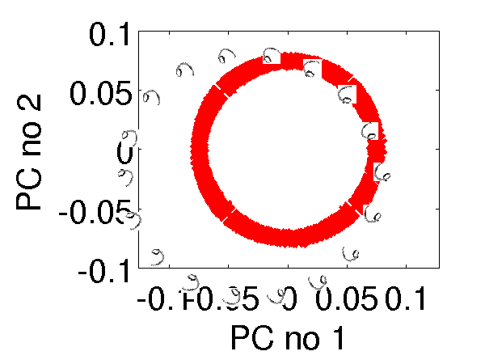
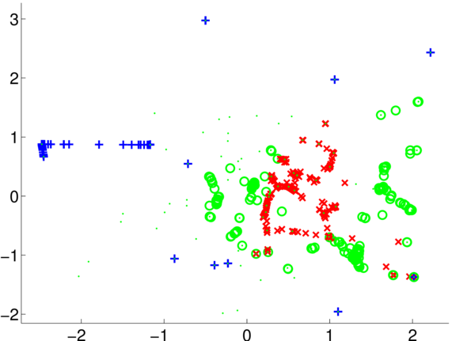
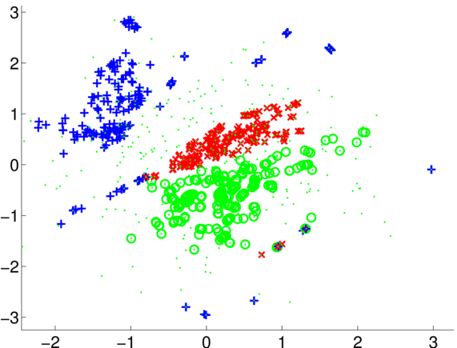
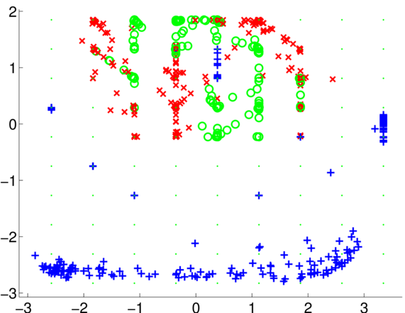
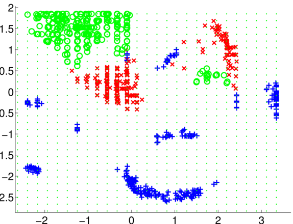
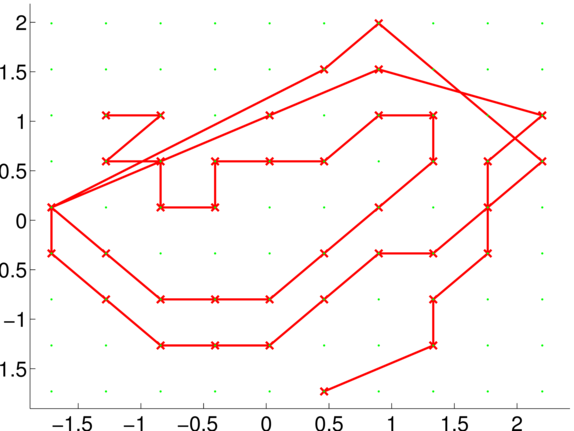
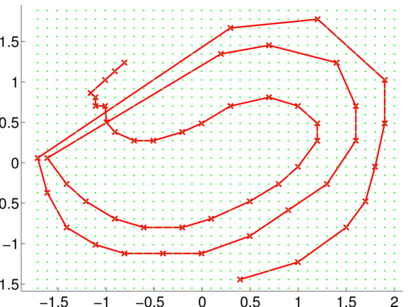

dimred
Dimensional reduction in MATLAB.
Matlab Dimensional Reduction Demos
Release Information
Current release is 0.12.
As well as downloading the DIMRED software you need to obtain the toolboxes specified below.
| Toolbox | Version |
|---|---|
| NETLAB | 3.3 |
| NDLUTIL | 0.161 |
| KERN | 0.223 |
| OPTIMI | 0.132 |
| MOCAP | 0.135 |
| PRIOR | 0.22 |
| FGPLVM | 0.161 |
| GP | 0.133 |
| DATASETS | 0.137 |
| MLTOOLS | 0.132 |
| PLOT2SVG | 0.1 |
| ROTATE_IMAGE | 0.001 |
| M_MAP | 1.4 |
| ISOMAP | 1.0 |
| LLE | 1.0 |
| MVU | 1.3 |
| SEDUMI | 1.21 |
| VOICEBOX | 1.12 |
Third release in line with Interspeech Tutorial.
Release 0.11
Second release in line with ICML tutorial.
Release 0.1
First release in line with Datamodelling School Talk. The scripts to run are given in the slides for the lecture.
Examples
Speech Synthesis
The synthesis examples are tested only on a Linux machine and they require the SYNTH toolbox (linked to above).
>> demPpcaCmp1Runs PCA on the means. PCA on the durations can also be run with demPpcaDur1. Files for running the GPLVM are demFgplvmCmp1 and demFgplvmCmp2. The second uses a mix of lengthscales.
Sixes Data
The rotation of the sixes example can be recreated using
>> demManifoldThe projection of the sixes on to their first two principal components is given below.

Left: Visualisation of the rotated sixes onto the first two principal components. .
Oil Data
The results for the oil data with the density network can be recovered using demOilDnet4 and demOilDnet5. They 100 samples and 400 samples respectively. Results are shown below.

Left: Visualisation of oil data with density networks and 100 samples from the latent distribution, demOilDnet4. Nearest neighbour classification in the latent space leads to 22 errors. Right: Visualisation of oil data with density network and 400 samples from the latent distribution, demOilDnet5. Nearest neighbour classification in the latent space leads to 16 errors.
The results for the oil data with the GTM can be recovered using demOilDnet1, demOilDnet2 and demOilDnet3. They used grids of 10x10, 20x20 and 30x30 respectively. Results for 10x10 and 30x30 grids are shown below.

Left: Visualisation of oil data with GTM and a 10x10 grid, demOilDnet1. Nearest neighbour classification in the latent space leads to 74 errors. Right: Visualisation of oil data with GTM and a 30x30 grid, demOilDnet3. Nearest neighbour classification in the latent space leads to 11 errors.
Stick Man Data
The results for the stick man data with the GTM can be recovered using demStickDnet1, demStickDnet2 and demStickDnet3. They used grids of 10x10, 20x20 and 30x30 respectively. Results for 10x10 and 30x30 grids are shown below.

Left: Visualisation of stick data with GTM and a 10x10 grid, demStickDnet1. Right: Visualisation of stick data with GTM and a 30x30 grid, demStickDnet3.
EPSRC Datamodelling Winter School School
Road Data
This example shows visualisation of inter city road distances projected onto an actual map of Europe using Procrustes rotation.
>> demCmdsRoadData

Left: Visualisation of cities from the road data compared to their actual positions in Europe. Right: some of the eigenvalues from the distance matrix for the data are negative.
Page updated on Sun Sep 6 00:00:22 2009